高倉観音/千葉県木更津市
木更津市の内陸部にある平野山高蔵寺は藤原鎌足誕生伝説を持つ真言宗豊山派の古刹である。
そして坂東三十三ヶ所の三十番札所の高倉観音としてよく知られた名刹でもある。
で、そんな古刹にして名刹の高倉観音が凄い事になっているという話を聞きつけて行ってみたのが数年前、かなり前に訪れた寺なのだが、先日、写真の整理をしていたらアップするのをすっかり忘れてることに気付いたので遅ればせながら皆様にお知らせする次第となった訳でして…
訪れた日は丁度近くで植樹祭があり、天皇皇后両陛下が臨席するということで、ものものしい警備が敷かれていた。
寺に着くといきなりこんな看板がお出迎え。
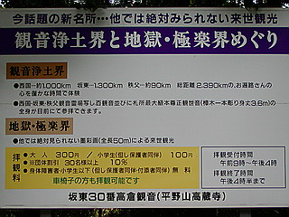
「今話題の新名所…他では絶対みられない来世観光」
…おおお、ワクワクさせるじゃないか！
「観音浄土界と地獄・極楽めぐり」とある。アグレッシブな宣伝文句に期待値は雲をも凌ぐ高さに到達。
早速、山門を潜って地獄極楽を探そう…っと山門に何かいるぞ。
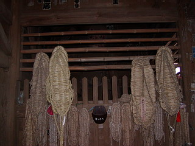
おほ〜。何ともいい感じにウエザリングされた仁王サマ！
吽形の塗りがほとんど剥がれちゃっているのも切ないが、阿形の中途半端に塗りが残っているのもまた哀愁が漂っていてイイもんですね。
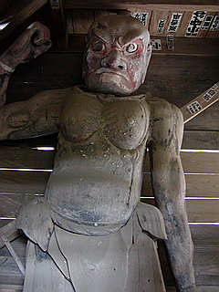 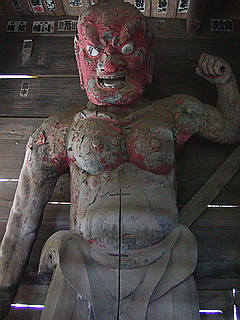
何だか東北の山奥の廃寺にいそうな感じの仁王サマだった。
三十三観音の札所の名刹なのに…
気を取り直して本堂に向かう。
この本堂はなんと大永6（1526）年に再建されたものだという。
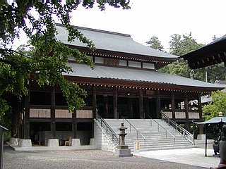 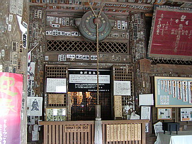
床の高さとそれを支える柱の多さがかなり特異な印象を与えている。
床柱は８８本、近寄ってみるとその柱の多さに改めて驚く。どこか西洋の古典建築の列柱を思わせる。
床の高さは2.3メートルもあるという。戦時中には床下が軍馬の厩舎に使われていたというのもうなずける。
それにしても見事な大柱だ。今ではなかなか手に入らないだろう。実際、建設当時も最後の方には柱にする木が足りなくなってなくなってしまい、それが現在の木更津（＝木足らず）という地名の由来となっているそうな。
…ネガティブな地名ですね…
歴史のある本堂だが、現在は屋根や階段など大規模な修繕がなされていて、遠目に見るとまるで最近出来たお堂のようだ。
本堂で参拝する。
坂東三十三ヶ所の札所だけあって訪れる人も多いのだろう。
堂内左手にあったお地蔵さんの足元には大量のガーゼが巻き付けてあって、ギョッとする。
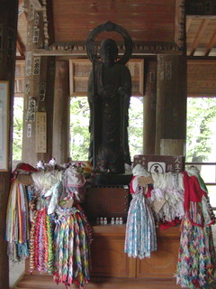 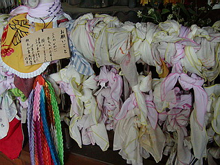
正面には厨子があり、中には本尊が納められているはずだが扉は閉じられている。
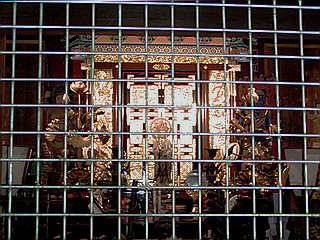
説明板によると本尊は正観音像、高さは3.6メートルあり、樟木一木彫では全国札所最大級だという。
厨子の高さは精々2メートル強。どう考えても3.6メートルの観音サマは納まるまい。
3尺6寸の間違いなのか？でも全国札所最大級って言ってるし…
どうなってんの？と思ったら、全身が縁下から見られるという。
ますます訳が判らなくなりつつもかつて厩舎だったという本堂の床下へ。
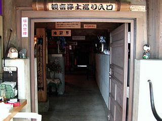
本堂の右の縁の下に入口があった。
一応、撮影禁止となっていたが、許可を頂戴したので遠慮なく激写させてもらいます。
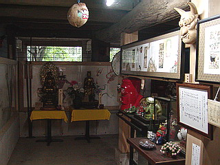
ここは丁度本堂の下、つまりかつて厩舎として使われていたという部分だ。
高さがあり、縁の下という感じはしない。むしろ2階建ての本堂という感じだ。
内部はチョットした寺宝館というか資料館というか秘宝館というか…まあ、そんな感じです。
地獄極楽巡りとはコレのことかい！
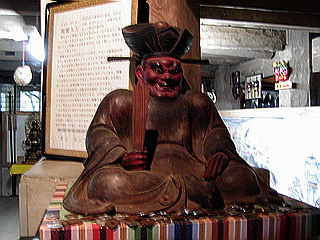 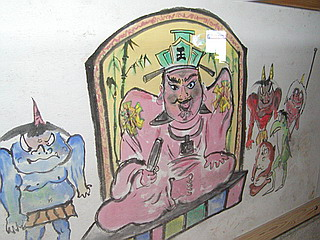
思わずコケるもズラリと並ぶ観音像は中々の迫力。
これが極楽巡りなのだろう。お賽銭がたくさんあがっていた。
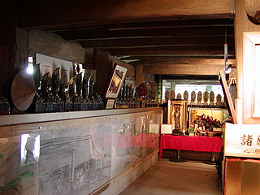 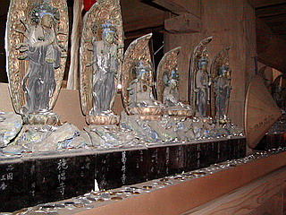
その他、寺宝といえるものから？？？と思えるものまで石玉混合のラインナップ。
三面大黒天があると思えばカエルの置物が並んだコーナーがあり、かと思うと象牙の観音像があったり、でもやっぱり河童の置物があったり…
この浄土巡りをつくった人物の個人的な趣味が反映されまくりで面白い。
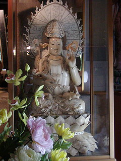 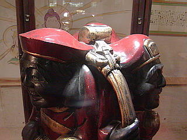
ちなみに撮影禁止の理由であろうソノ手の展示物も充実。
子供も入場OKなんでそんなにどぎついものじゃあないんですけど、まあ、みんなも大人だから大体の察しはつきますよね…
さて。
そんなこんなで全長50メートルの地獄極楽観光のクライマックスである。
中央にドーンと祭壇が設えており、御簾が下がっている。
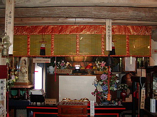
これだけ勿体をつけているんだからきっと凄いモノがあるに違いない…
と、期待しつつ近寄って見ると…
おっ、これはもしや…
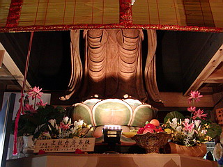
あああ〜！
御本尊サマじゃないですか〜！
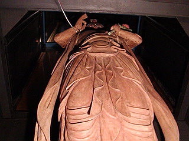
何と、この観音サマは床下から立ち上がっていたのだ。
3.6メートルの観音サマは床を貫き上半身だけが厨子に納まっているということになる。
でも下から見上げるとチョット怖いですね…
何でこんなことになっちゃったんだろう。
この観音像は言い伝えによるとあの行基が彫ったという（その割には新しく見えるのだが、とりあえず話を進めるよ）。
もしそれが事実であれば今の本堂が建てられるはるか前から存在していたことになる。
つまり3.6メートルというサイズの観音像を納めるためにこのような高床式の本堂を建てたのではないかと推察できる。
それにしても、これより大きな観音像は全国各地にあるが、このような形式の仏堂は見た事がない。普通、階高を高くして仏像を納めようと考えるのではなかろうか。
あえて高床にする合理的な理由が見つからない。
そこでこの観音像と寺の歴史について少し調べてみる。
（ダイジェストでお送りします）
飛鳥時代にあるお坊さんがこの地で修行していると、一人の老人が現れ「観音を授けよう」と告げ、消えてしまう。見れば木の枝に4寸程の小さな観音像が引っかかっていたという。その観音像を祀ったのがこの寺のそもそもの始まりなのだ。その後、天平年間に行基がその4寸の観音像を頭部に納めた大像を造ったのである。その大像こそが現在の高倉観音の本尊なのだ。
…つまり、この大きな観音サマのキモは頭部に納まっている小さな観音像なのだ。
いってみれば兜甲児といいますか…
普段は厨子に納まっている上半身を見せないながらも床下からならいつでも参拝できるというのも頭部にある観音像が重要視されている証左であろう。
従って参拝者は大きな観音サマと頭部に納まっているであろう小さな観音像を同時に拝みたい。
それには大きな観音サマの顔の部分に近づかなければならない。
そのニーズに答えるために考案されたのが、この下半身床下収納システムなのだ！
…と、勝手に想像してみました。
一見無謀にも思える形状ながら、一生懸命知恵を絞っている姿が見えてくるような気がする。
どんなキテレツな建物にも合理的な理由があるのだ。
そういえば坂東札所の次の札所、三十一番笠森観音の四方懸造の大悲殿も同じ頃に建てられている。
何らかの影響があったのかもしれない。確証はな〜んにもないですけどね。
地獄極楽はイマイチだったけど大いに実りのある訪問であった。って何年も忘れてたけど…
境内には謎の石像がいくつかあったりしてチビッコも大喜び、な筈。
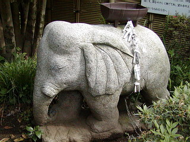
銅鑼衛門とか比蚊中とかもあったけど、今はもうないかもなあ。
2003.5.
珍寺大道場 HOME